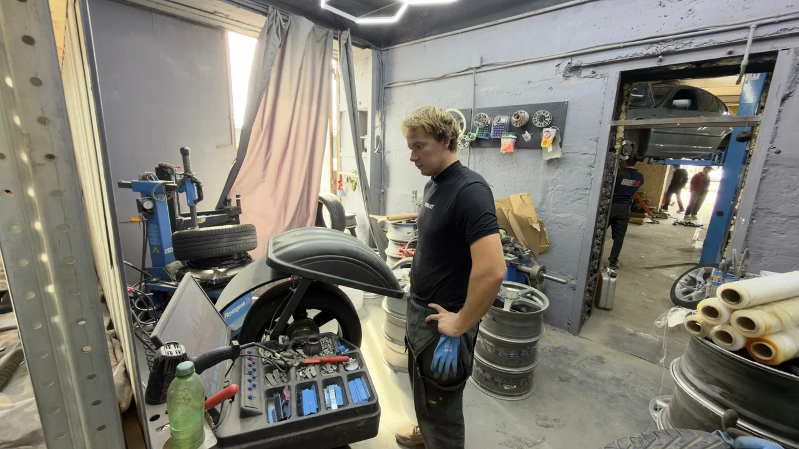
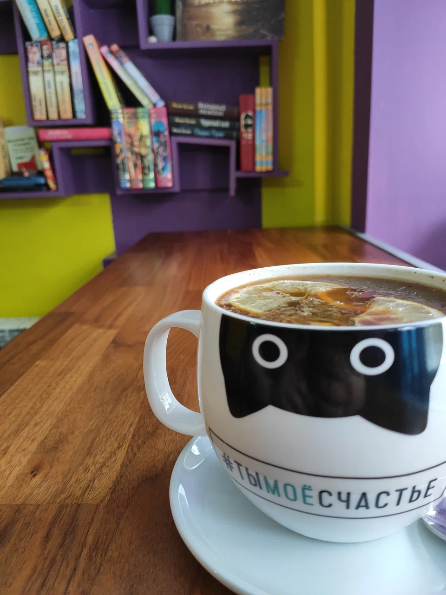
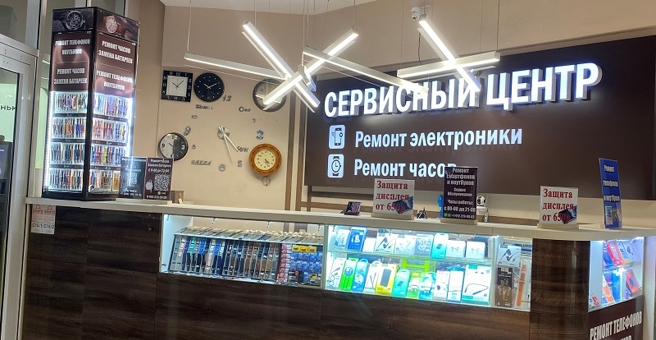
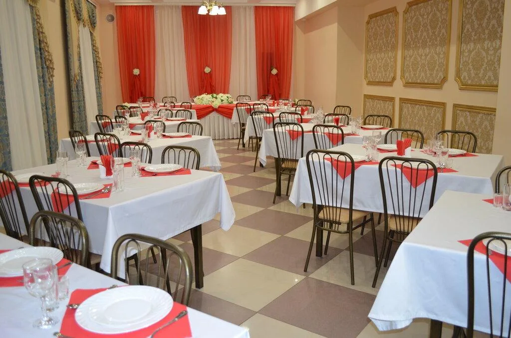

Сайты для
местного бизнеса.
Я Тимур. Создаю сайты для кофеен, мастерских и сервисов: услуги, фотографии, контакты и маршрут на одной странице. Посетитель сможет узнать о вас и связаться с телефона.
Избранные работы
03 ИЗБРАННЫХ / ЕЩЁ 6 ПРИМЕРОВ НИЖЕ
НОВОЕ / КОНЦЕПТShinka Burnout ↗
Екатеринбург / шиномонтажЗадача: помочь водителю выбрать услугу и обсудить запись. На странице — виды работ, телефон, ВКонтакте и маршрут.

НОВОЕ / КОНЦЕПТТардис ↗
Екатеринбург / кофейняЗадача: познакомить гостя с кофейней и помочь найти её. Фотографии, информация о месте и переход к меню на карте.

НОВОЕ / КОНЦЕПТСервисный центр ↗
Екатеринбург / ремонт техникиЗадача: помочь посетителю найти нужный ремонт и связаться с мастером. Виды услуг, Telegram и маршрут в 2ГИС.
Другие концепты
 01 / КОНЦЕПТ
01 / КОНЦЕПТ
Кофе с собой ↗
Рыбинск / кофейняГалерея, вкладки и городской характер.

02 / КОНЦЕПТВерсаль ↗
Верхние Киги / гостиницаРедакционная композиция и фотогалерея.
 03 / КОНЦЕПТ
03 / КОНЦЕПТ
Встреча ↗
Верхние Киги / кафеТёплая палитра и внимание к пространству.
АвтоЛап ↗
Верхняя Пышма / автосервисУслуги, контакты и характер мастерской.
Театральная кофейня ↗
Челябинск / кофейняТеатральная эстетика и анимация.
Как дома ↗
Казань / кафеПростая навигация, галерея и FAQ.
Что я могу сделать для вас
Одностраничный сайт под ваш бизнес: дизайн, мобильная версия, услуги, фотографии, контакты, карта и кнопки звонка или сообщения.
Сначала обсудим задачу и материалы, затем согласуем состав работ, стоимость и срок. После согласования покажу сайт, внесу оговорённые правки и помогу с публикацией. Домен и хостинг обсуждаются отдельно.
Форма с отправкой заявок, онлайн-запись и другие интеграции оцениваются отдельно.
Рассказать о задаче ↗Открыто о проектах.
Все страницы в подборке — демонстрационные концепты, для локального бизнеса. Они не представлены как оплаченные заказы или официальные сайты предприятий.
Контакты и фотографии сопровождаются источниками. Для коммерческого использования необходимо подтвердить актуальность сведений и права на изображения. Ограничения проверки указаны внутри работ.
Код и описание проектов на GitHub ↗